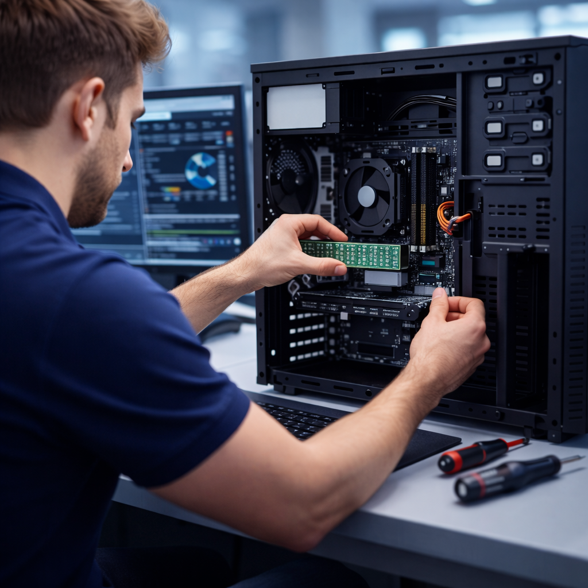

🎫
Soporte e incidencias
Diagnóstico, solución, escalado y cierre con documentación.
- Windows, software y rendimiento
- Problemas de conectividad
- Buenas prácticas y prevención
Trabajo en el sector tecnológico resolviendo incidencias, reparando equipos y desplegando redes (incluyendo proyectos de puntos de acceso). Me gusta dejar las cosas estables, seguras y bien documentadas.
Perfil técnico con experiencia real en soporte, redes y mantenimiento.
Soy estudiante de Administración de Sistemas Informáticos en Red (ASIR) y trabajo en el sector IT como técnico de soporte.
En mi día a día gestiono incidencias, hago diagnóstico y resolución, mantengo equipos y participo en despliegues de red (especialmente WiFi y puntos de acceso). Me enfoco en soluciones limpias, verificadas y documentadas.
Lo que puedo aportar en entornos reales (empresa o cliente).
Diagnóstico, solución, escalado y cierre con documentación.
Instalación/configuración y verificación de cobertura y estabilidad.
Montaje, reparación, upgrades y puesta a punto.
Resumen de mi trayectoria (editable si quieres añadir empresa/fechas).
Resolución de incidencias, soporte a usuarios, mantenimiento de equipos y tareas de red. Documentación y mejora de procedimientos para reducir recurrencias.
Administración de sistemas, redes, servicios y fundamentos de seguridad. Laboratorios prácticos con Linux y troubleshooting.
6 proyectos mínimo. Aquí van en formato “portfolio” con imágenes.
Instalación y configuración de APs, verificación de cobertura y estabilidad en entorno real.

Diagnóstico y solución de problemas en Windows y red, con documentación de cierre.

Upgrades (RAM/SSD), optimización, drivers y pruebas de estabilidad.
Direccionamiento IP, pruebas de conectividad y checklist de entrega.
Administración básica, usuarios/permisos, servicios y logs.
Guías y procedimientos para estandarizar soluciones y mejorar tiempos de soporte.
Tip: si no tienes imágenes todavía, crea una carpeta assets y mete 6 imágenes con esos nombres
(ap.jpg, support.jpg, pc.jpg, lan.jpg, linux.jpg, docs.jpg).
Barras + detalle. Ajusta porcentajes a tu nivel real.
Incidencias, troubleshooting, documentación y trato con usuario.
LAN, conectividad, despliegue de APs y verificación.
Terminal, permisos, servicios básicos y logs.
Montaje, diagnóstico, upgrades y mantenimiento.
Configuración, drivers, optimización y soporte.
Procedimientos claros, checklists y handover.
Si necesitas soporte, redes o mantenimiento, escríbeme.
Respondo rápido. Puedes escribirme por email o usar el formulario.
Enviar email Ver GitHub